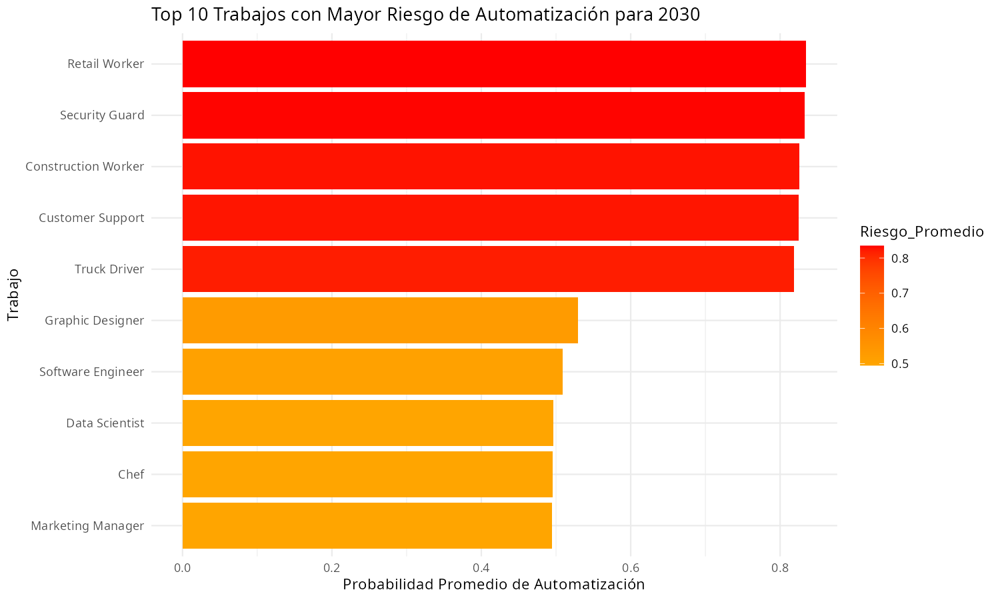
Este gráfico muestra los 10 trabajos con mayor probabilidad de ser automatizados para 2030. Destacan roles repetitivos y predecibles, lo que sugiere la necesidad de reconversión laboral en esos sectores.
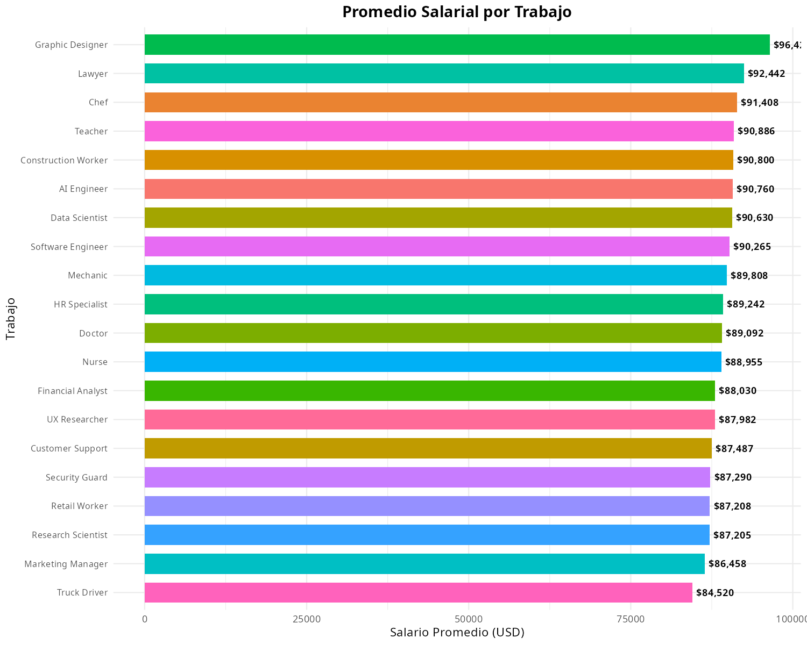
La gráfica de pastel revela cómo se reparte el salario promedio entre los distintos empleos. Las porciones más grandes indican mayor concentración de ingresos en pocas ocupaciones.
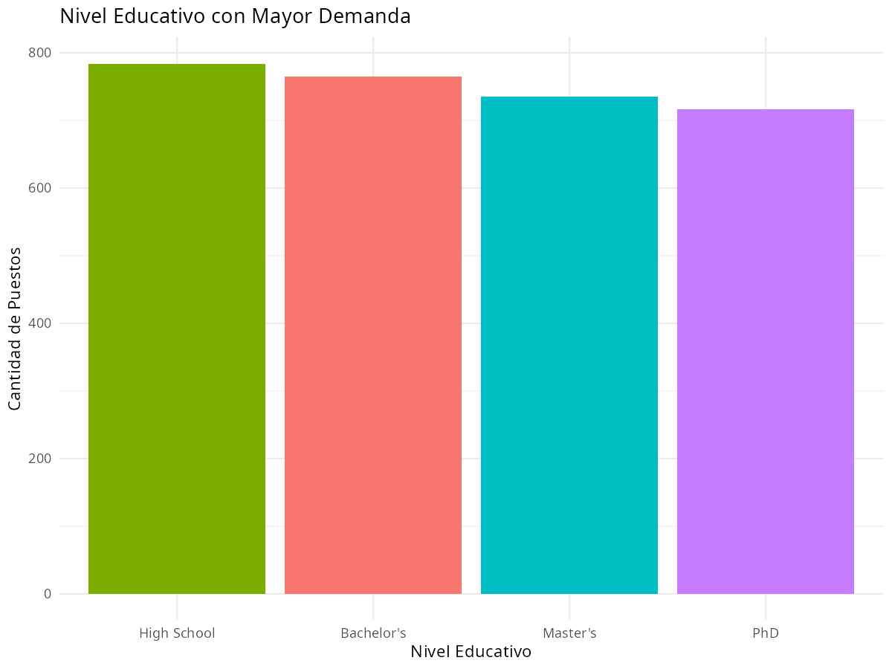
La demanda de empleo según el nivel de estudios muestra que los perfiles con mayor formación son los más solicitados, aunque no siempre los mejor pagados (ver gráfica siguiente).
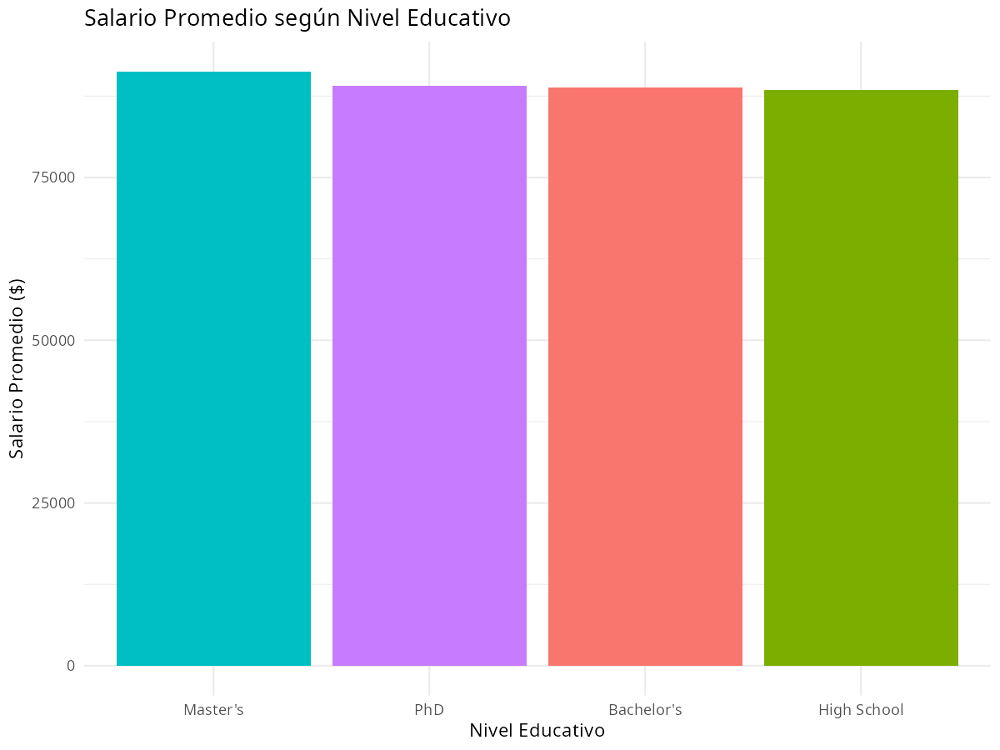
Existe una correlación positiva entre el nivel educativo y el salario, pero el incremento marginal varía. Un doctorado no siempre duplica el ingreso de una maestría, lo que se refleja en el KPI de Retorno Salarial por Nivel.
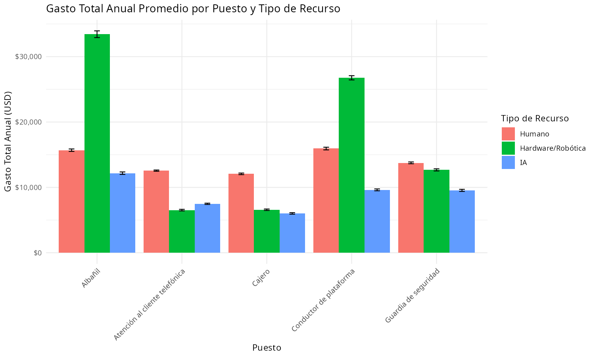
Comparativa del coste anual promedio de cada puesto según sea desempeñado por humanos, hardware robótico o soluciones de IA. La IA muestra un gasto notablemente inferior en la mayoría de los roles analizados.
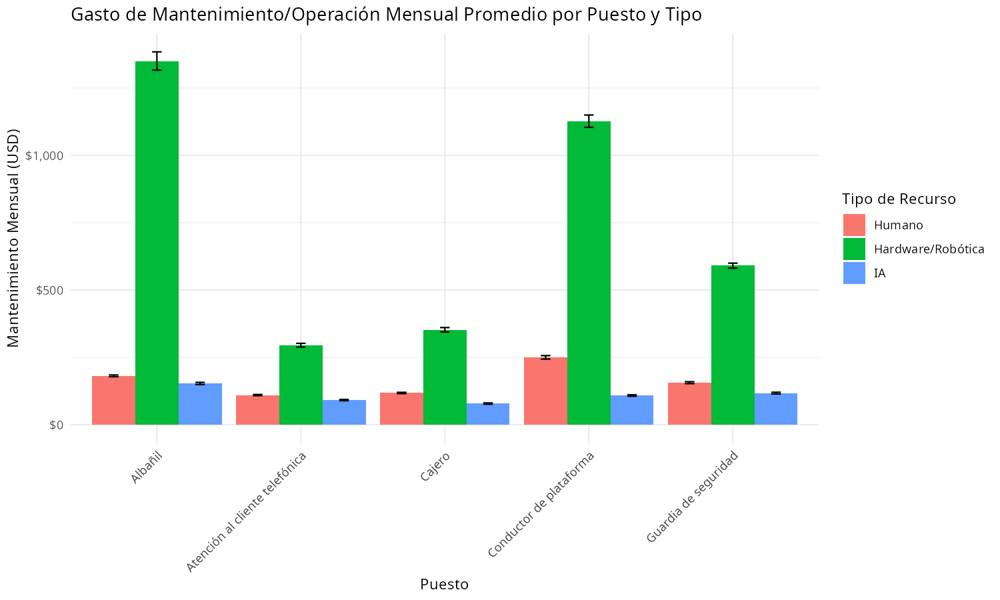
El coste recurrente de mantener sistemas automatizados es, en general, más predecible y bajo que los gastos asociados a empleados humanos (formación, beneficios, etc.).
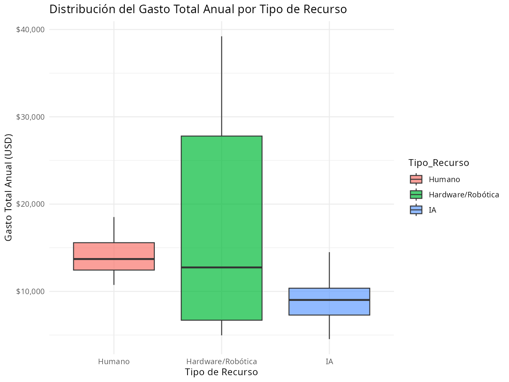
La variabilidad del gasto es mucho mayor en los empleados humanos, mientras que las soluciones de IA presentan una dispersión más reducida, lo que facilita la planificación financiera.
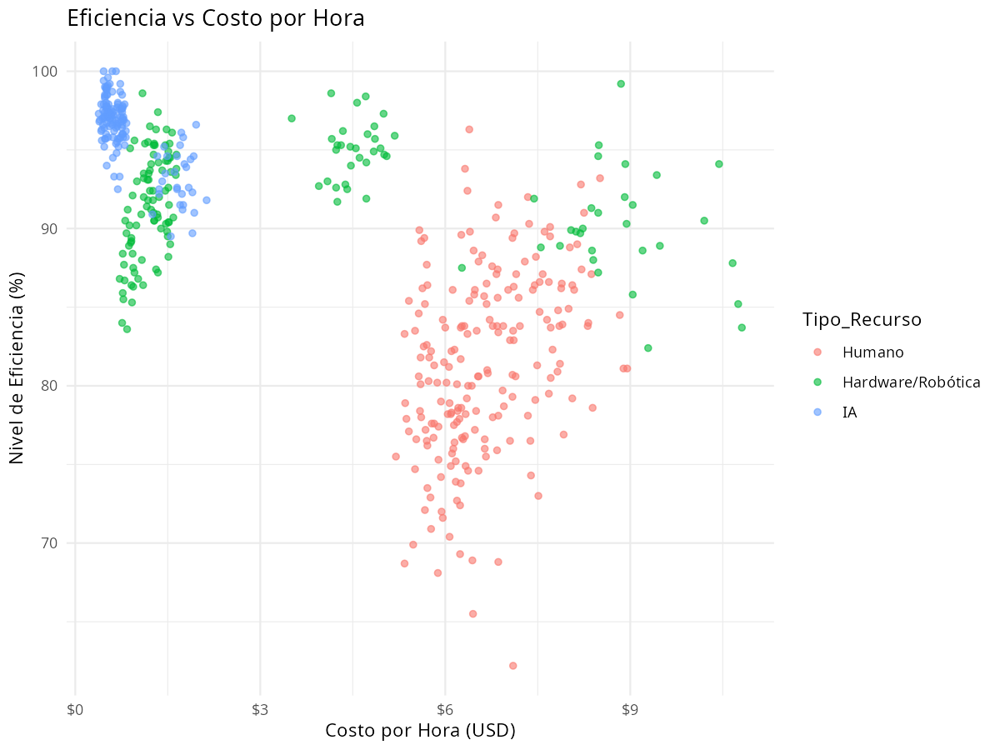
Los puntos de IA tienden a ubicarse en la zona de alta eficiencia y bajo coste por hora, mientras que los humanos muestran una relación más dispersa.
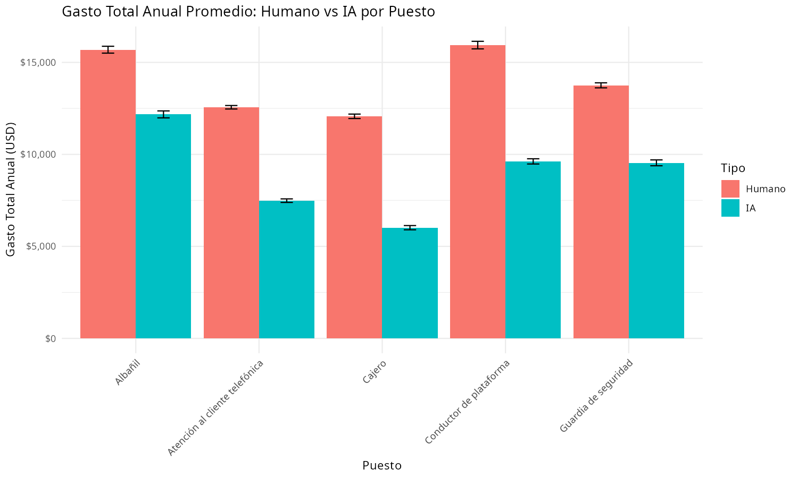
En la mayoría de los puestos la IA supone un ahorro sustancial. El KPI “% Puestos donde IA es más barata” cuantifica esta ventaja.
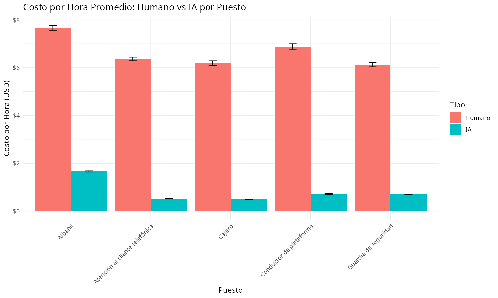
La diferencia horaria es aún más pronunciada en roles intensivos en conocimiento, donde las licencias de software resultan mucho más económicas que el salario/hora de un profesional.
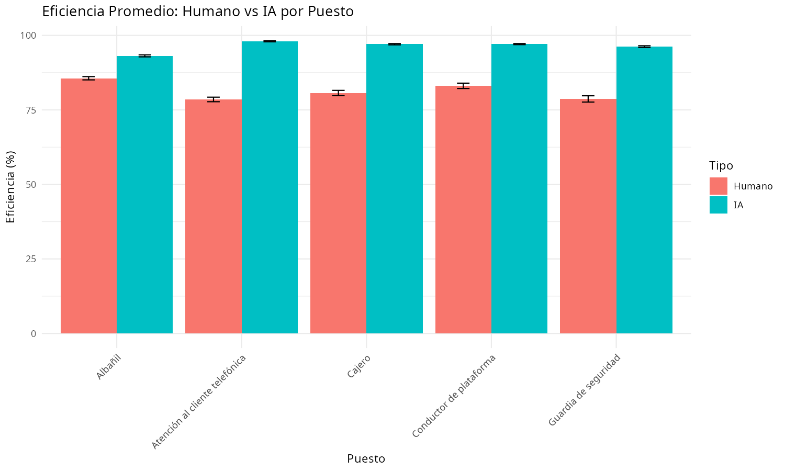
La IA alcanza niveles de eficiencia superiores al 90% en varios puestos, mientras que los humanos rara vez superan el 85% en las mismas tareas.
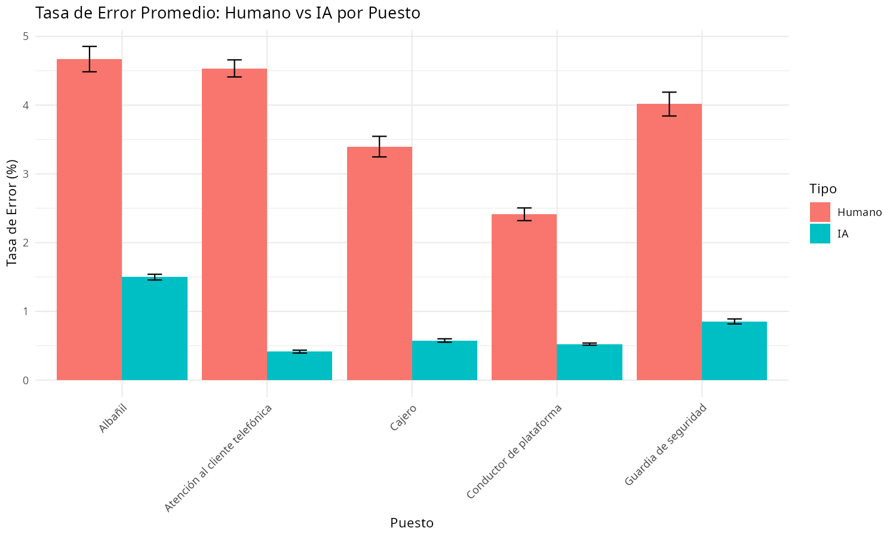
La automatización reduce drásticamente los errores, especialmente en procesos repetitivos. La diferencia es un argumento clave para la adopción de IA en entornos críticos.